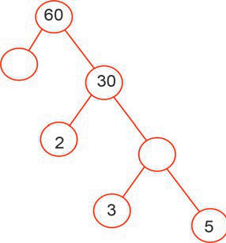

Exercise 5
1.Find the prime factors of the following numbers:
(a) 12
(b) 28
(c) 15
(d) 24
(e) 14
(f) 154
2.
How many prime factors does 9 have?
3.
List all prime factors of 100.
4.
Write 45 as a product of prime factors.
5.Fill the missing factors in the following tree diagrams:
(a)
(b)

(c)